Connectors
Confluent® Connector
Overview
The ASAPIO Confluent connector is certified by Confluent and supports two connectivity modes:
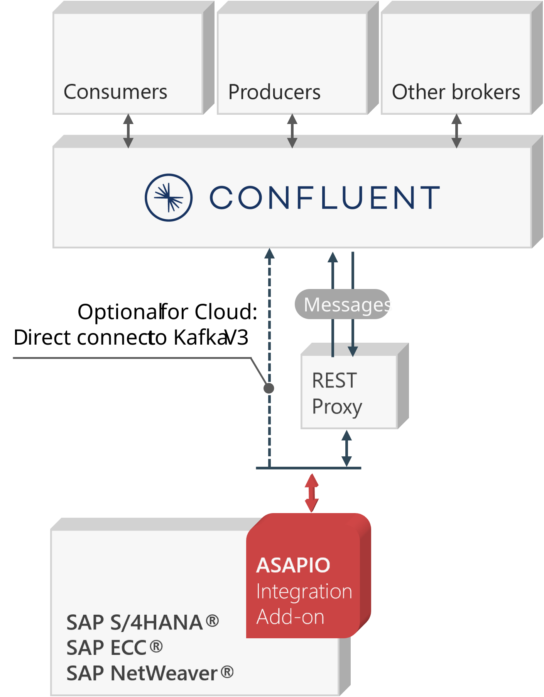
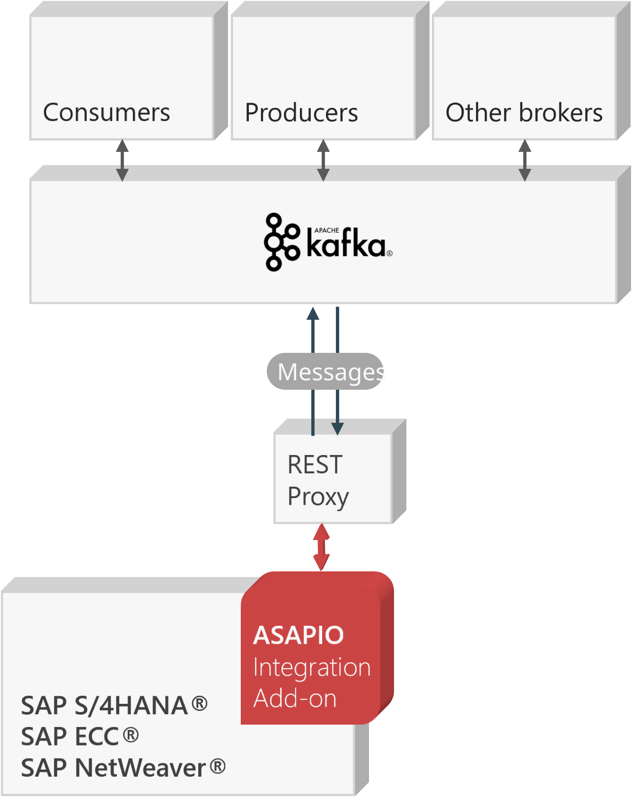
- REST Proxy – standard approach using the Confluent REST Proxy v2 API over HTTPS
- Native Kafka Protocol – direct Kafka protocol connection without a REST proxy (from release 2510)
REST Proxy Setup
RFC Destination
Create an HTTP RFC destination (SM59, type G) pointing to your Confluent REST Proxy endpoint. Basic authentication or SSL certificate authentication can be configured in the RFC destination's Logon & Security tab. After saving, use the connection test to verify connectivity (expect HTTP 200).
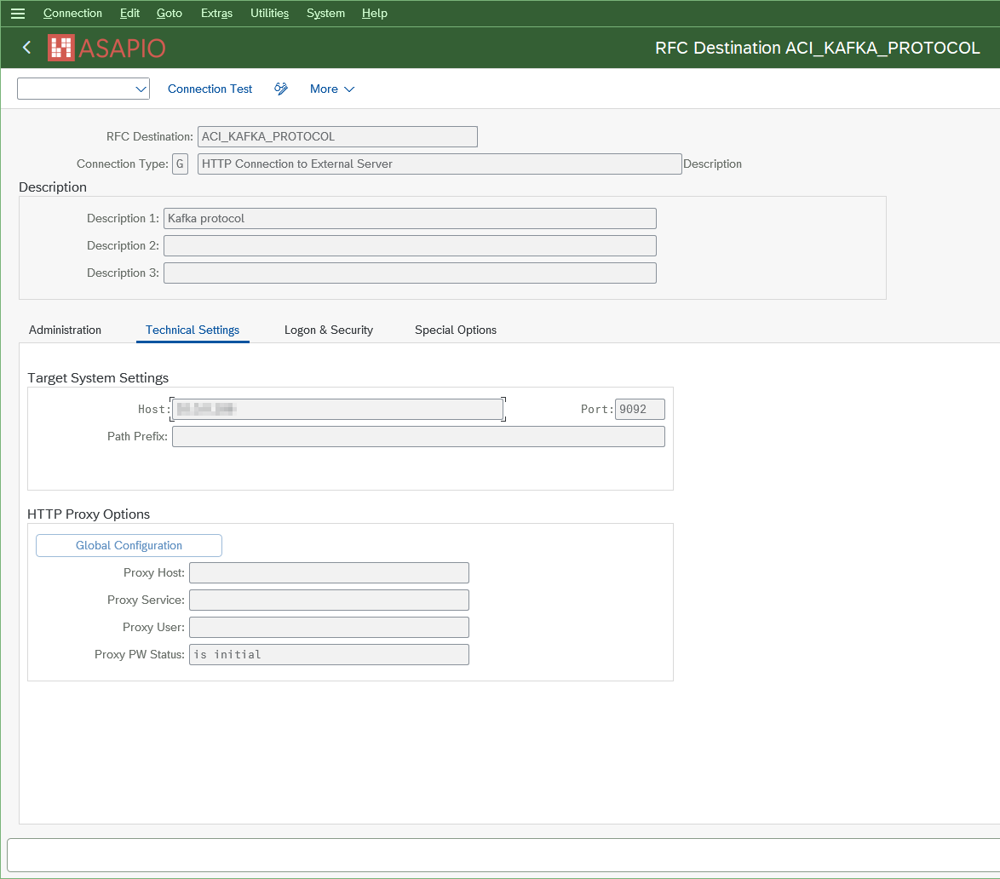
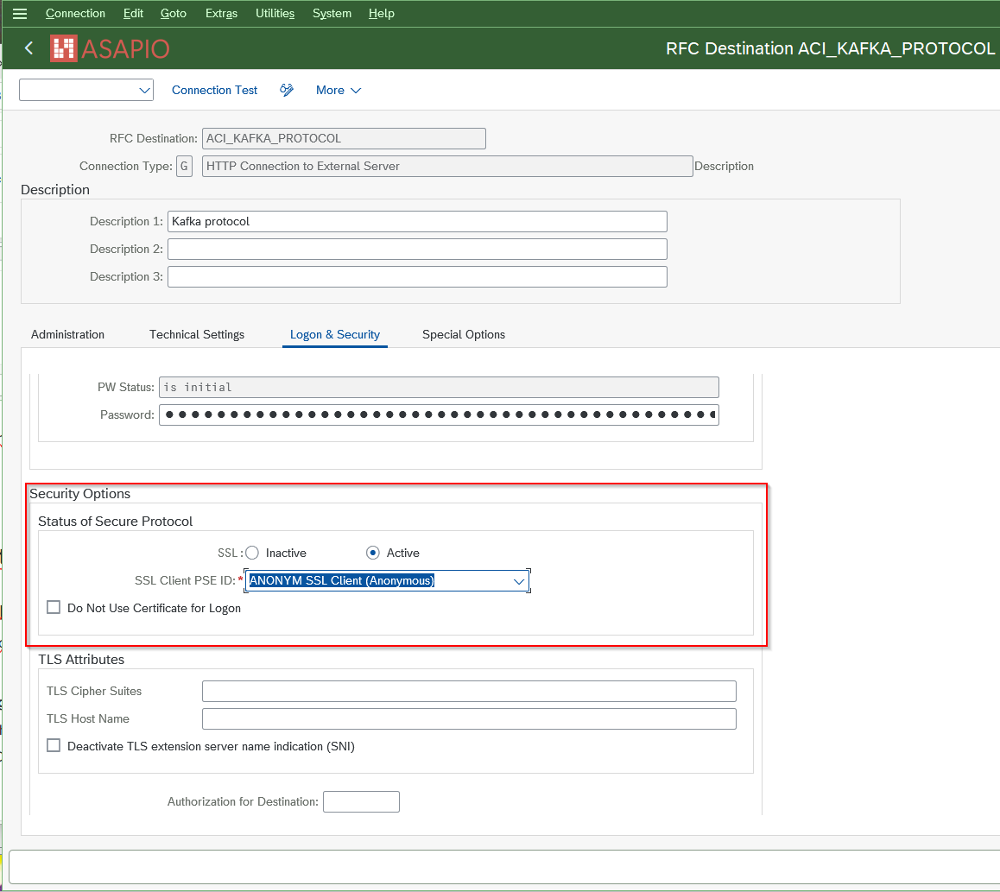
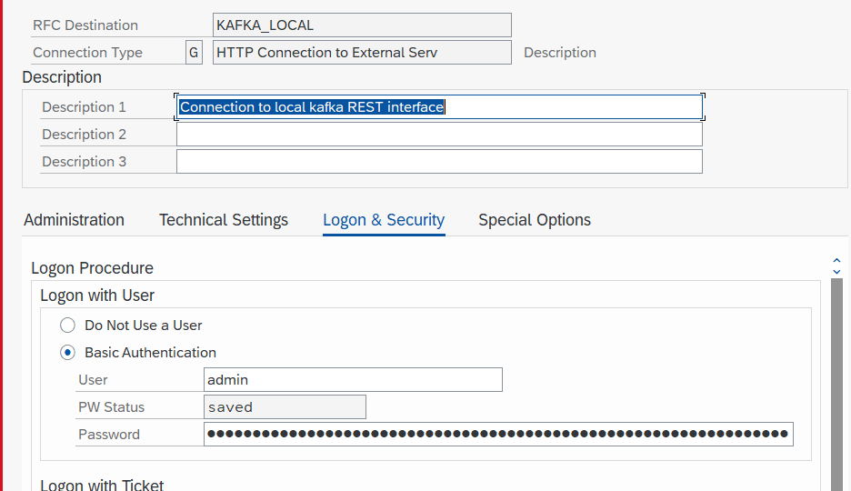
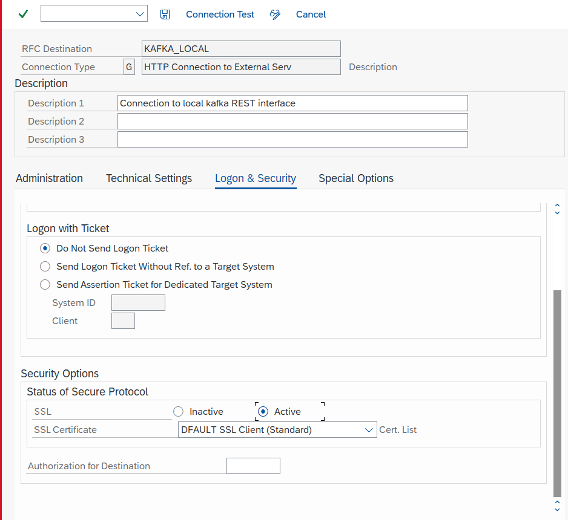
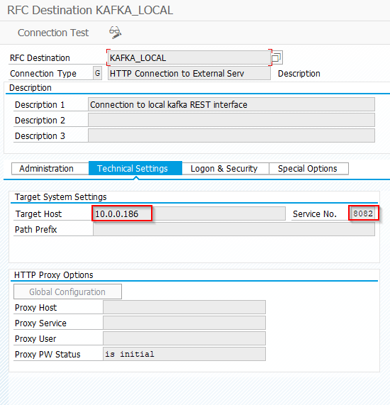
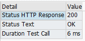
BC-Set & Cloud Adapter
Activate BC-Set /ASADEV/ACI_BCSET_FRAMEWORK_KAFK via SCPR20. This sets up the cloud adapter (/ASADEV/CL_ACI_KAFKA_HANDLER), codepages, and IDoc segment definitions. If not using the BC-Set, configure them manually in SPRO.
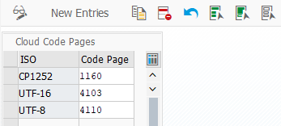
Cloud Instance
Create the connection instance in SPRO → ASAPIO Cloud Integrator – Connection and Replication Object Customizing (transaction /ASADEV/ACI_SETTINGS):
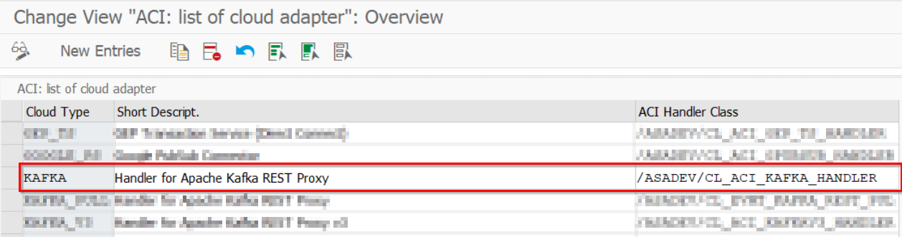
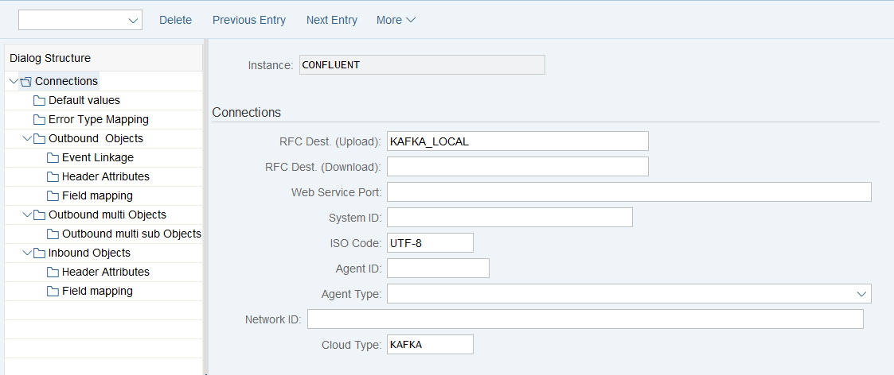
| Field | Value |
|---|---|
| Cloud Adapter | /ASADEV/CL_ACI_KAFKA_HANDLER |
| Cloud Type | KAFKA (REST proxy) or S4KAFKA (native) |
Connection default values:
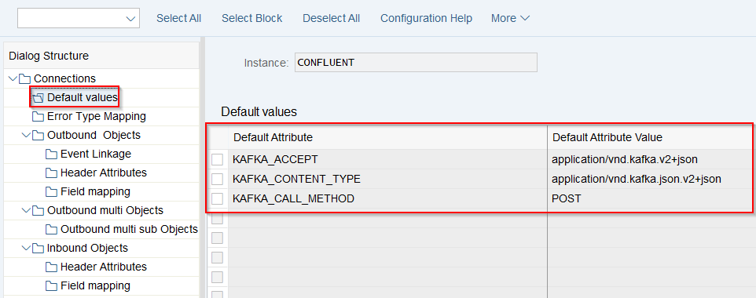
| Key | Value |
|---|---|
KAFKA_ACCEPT | application/vnd.kafka.v2+json |
KAFKA_CALL_METHOD | POST |
KAFKA_CONTENT_TYPE | application/vnd.kafka.json.v2+json (or application/vnd.kafka.jsonschema.v2+json for payloads with schema registry) |
Note: Configure HTTP response code 207 as a success response in the error mapping – the Confluent REST Proxy returns 207 for successfully processed batch produce requests.
Native Kafka Protocol (S4KAFKA)
From release 2510, the connector supports direct Kafka protocol connectivity without a REST proxy, via an ABAP daemon that maintains a constant connection and session to the Kafka broker. Use Cloud Type S4KAFKA and Cloud Adapter /ASADEV/CL_S4_KAFKA_HANDLER.
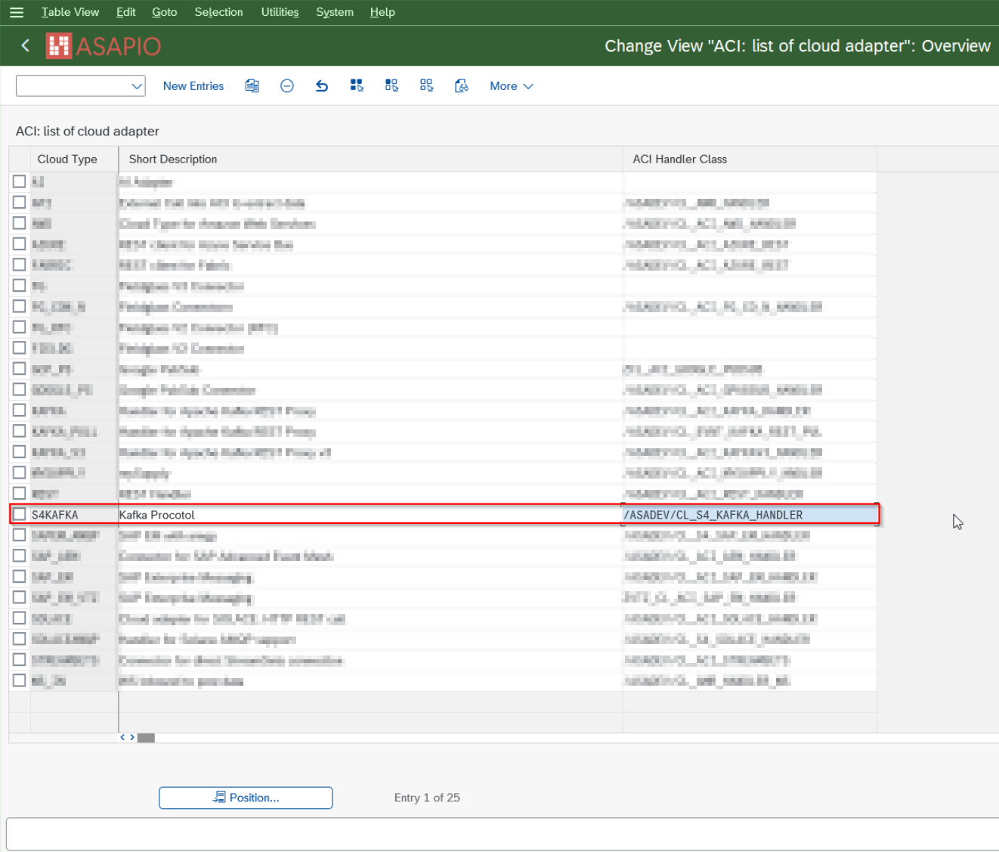
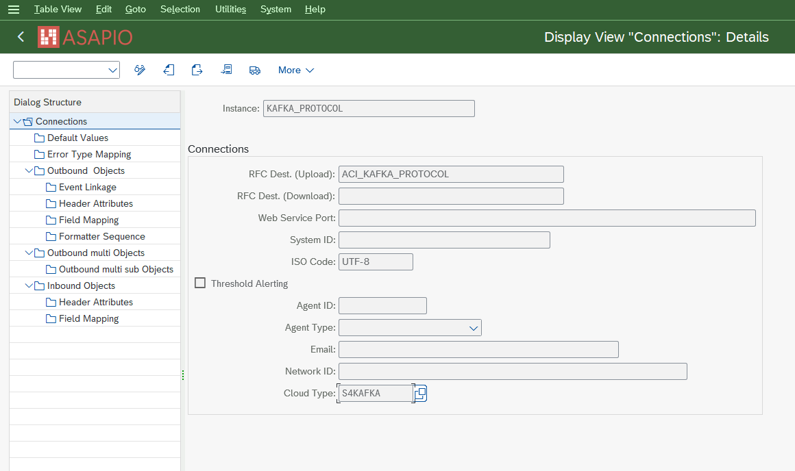
Outbound Configuration
For outbound messaging, use and combine the following methods. All methods require a message type (WE81 + BD50 activation) and event linkage (SWE2). /ASADEV/ACI_KAFKA_RESP_HANDLER is mandatory as the Response Function for all outbound objects.
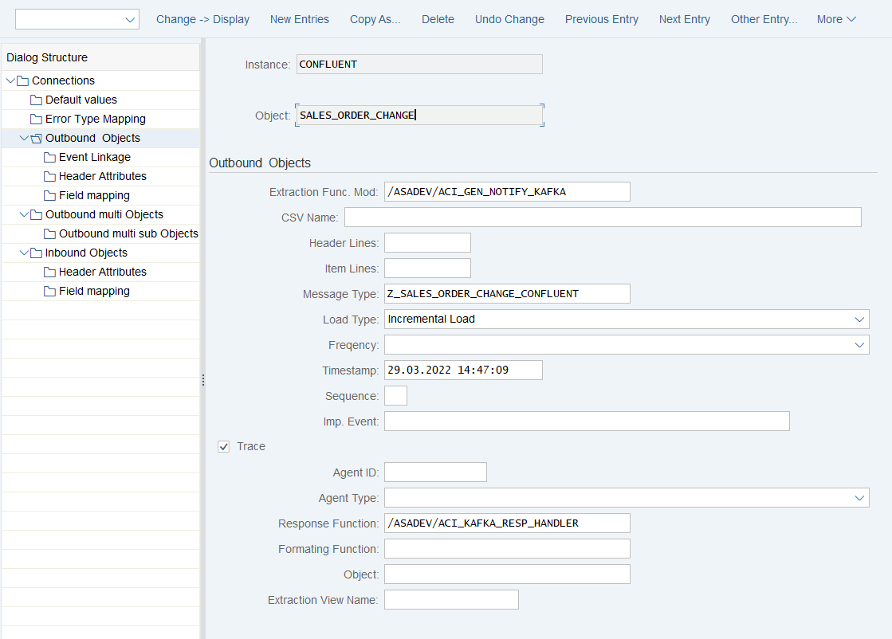
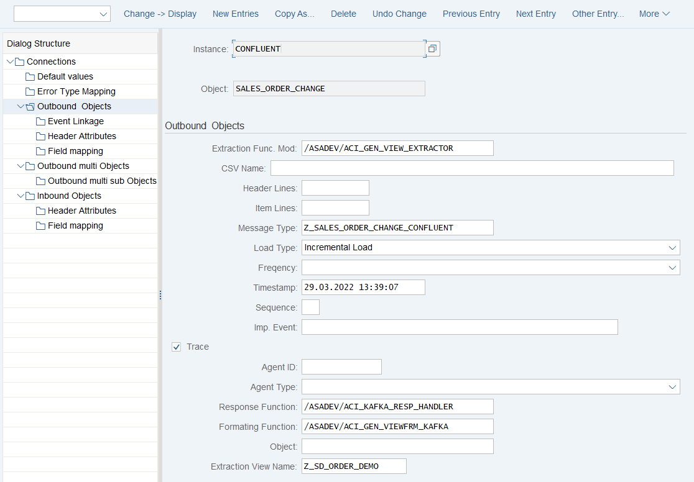
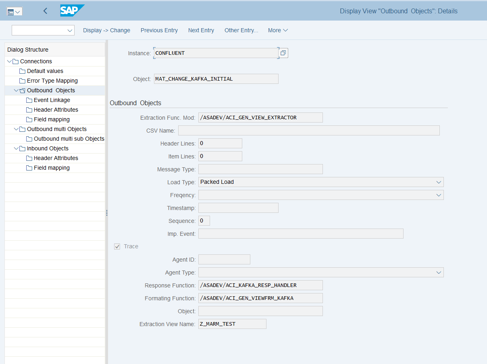
| Role | Function Module |
|---|---|
| Simple notification | /ASADEV/ACI_GEN_NOTIFY_KAFKA |
| Response handler (mandatory) | /ASADEV/ACI_KAFKA_RESP_HANDLER |
| DB view extractor / Packed Load | /ASADEV/ACI_GEN_VIEW_EXTRACTOR (use Load Type: Packed Load for large datasets) |
| Formatter | /ASADEV/ACI_GEN_VIEWFRM_KAFKA |
Key Header Attributes
| Attribute | Description |
|---|---|
KAFKA_TOPIC | Target Kafka topic name |
KAFKA_KEY_FIELD | Semicolon-separated list of fields used as the Kafka message key |
KAFKA_SCHEMA_ID | Schema registry ID for the message value (Avro/JSON schema) |
KAFKA_KEY_SCHEMA_ID | Schema registry ID for the message key |
Dead Letter Queues (2510+)
From release 2510, ASAPIO supports routing failed messages to a Dead Letter Queue (DLQ) topic – either after a specified number of retries, or on specific HTTP error codes. Configure with outbound object header attributes:
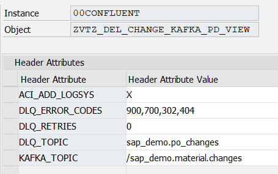
| Attribute | Description |
|---|---|
DLQ_TOPIC | Name of the dead letter queue topic |
DLQ_ERROR_CODES | HTTP error codes that trigger DLQ routing (comma-separated) |
DLQ_RETRIES | Number of retry attempts before moving to DLQ |
Inbound: REST Proxy Pull
ASAPIO can pull messages from Kafka via the Confluent REST Proxy consumer API. Configure the inbound object in transaction /ASADEV/ACI_SETTINGS, then set the header attributes for the consumer group, instance, and topic. The inbound function module creates a generic IDoc (/ASADEV/ACI_GENERIC_IDOC) which can be processed asynchronously. From SP09 (9.32405), the pull correctly supports the host header for load-balanced REST Proxy instances.
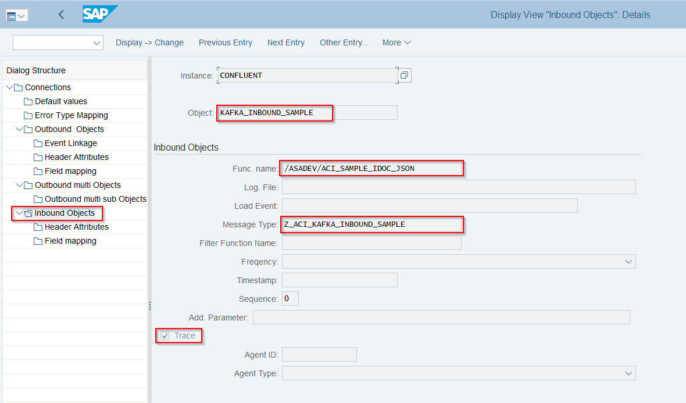
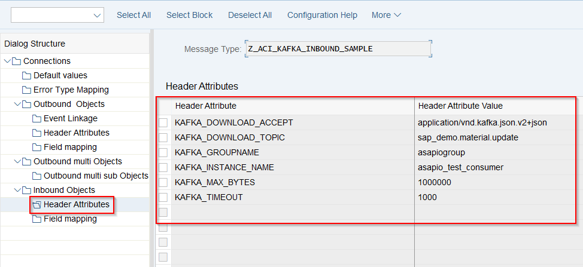

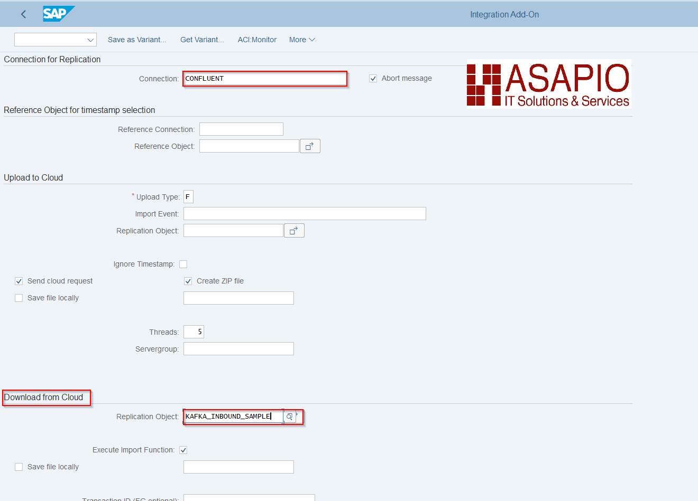
| Attribute | Description |
|---|---|
KAFKA_DOWNLOAD_TOPIC | Topic to subscribe to |
KAFKA_GROUPNAME | Consumer group name |
KAFKA_INSTANCE_NAME | Consumer instance name (unique per SAP client) |
KAFKA_MAX_BYTES | Maximum bytes per pull request |
KAFKA_TIMEOUT | Consumer timeout in milliseconds |
KAFKA_CONSUMER_FORMAT | Message format: json or binary |
KAFKA_CONSUMER_OFFSET_RESET | Offset reset strategy: earliest or latest |
KAFKA_CONSUMER_AUTO_COMMIT | true – auto-commit offsets after successful processing |